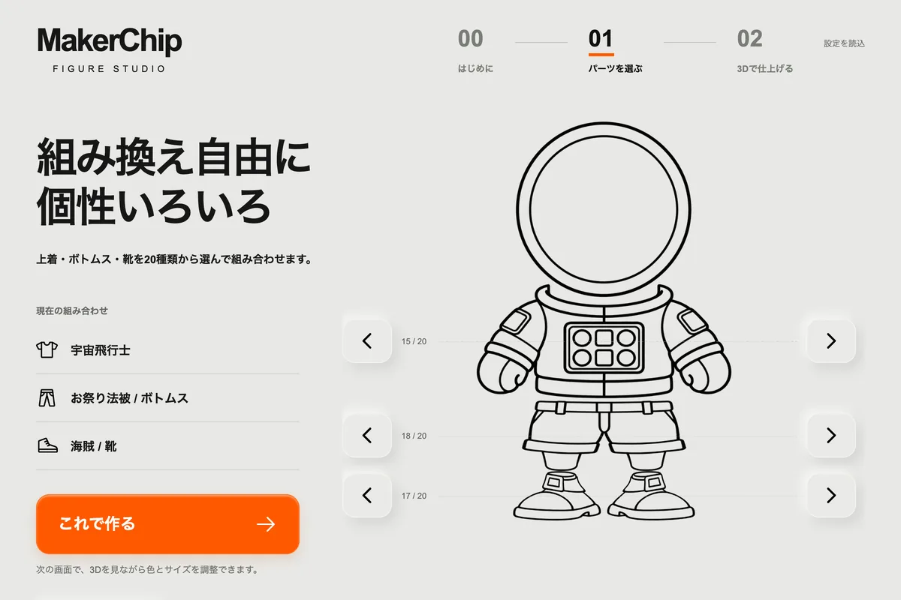
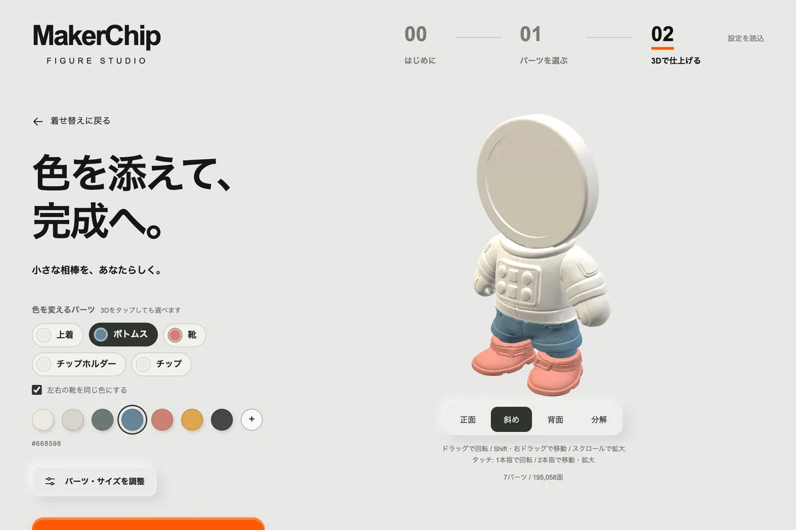
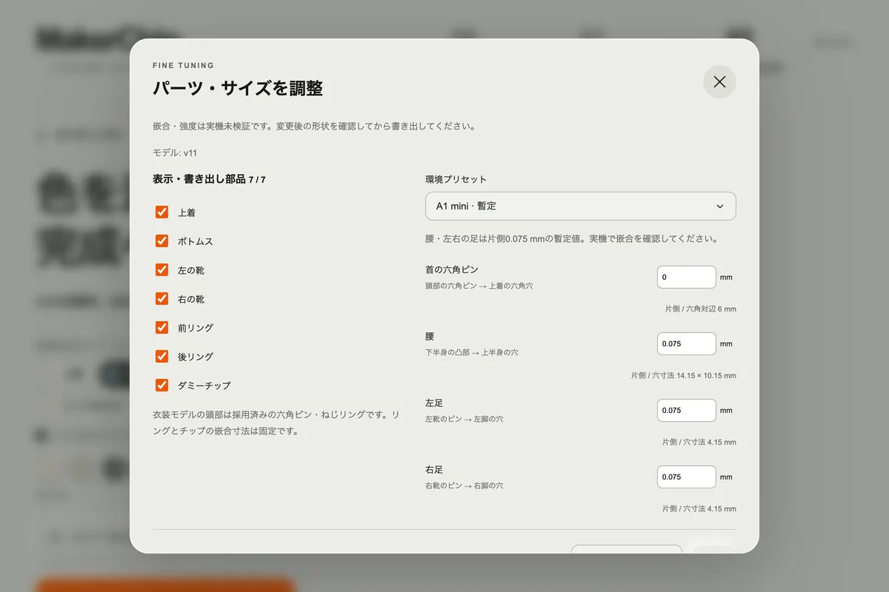

ブラウザだけで完結
インストールもアカウントも不要。形状の生成はブラウザの中で行い、データをサーバーへ送りません。
A LITTLE FIGURE. ALL YOURS.
20種類の上着・ボトムス・靴を組み合わせて、MakerChipをはめ込む小さなフィギュアを。色を添えたら、3Dプリント用のSTLまでブラウザだけで書き出せます。
00 / はじめに
MakerChipは、3Dプリントを楽しむメイカーのための、カスタマイズできる小さなトークン。自分でデザインして刷り、名刺がわりに交換したり、集めたりして楽しめます。詳しくはmakerchip.appへ。
MakerChip Figure Studioは、そのチップを顔にする約2頭身のフィギュアのジェネレーターです。頭のリングは直径40 mm・厚さ3 mmのチップに合わせて設計し、服と靴は差し込み式。好きな衣装を選んで、色を決めて、そのまま3Dプリンタへ。
インストールもアカウントも不要。形状の生成はブラウザの中で行い、データをサーバーへ送りません。
腰と足首の接続を全衣装で共通化。全組み合わせについて、部品どうしが干渉しないことを数値で検査しています。
部品ごとのSTLか、色付きでプレートに並べた3MFを、造形向き・mm単位で。首・腰・左右の足の穴は、プリンタに合わせて接続ごとに調整できます。
01–03 / つくり方

01
上着・ボトムス・靴を、矢印または一覧から選びます。線画のモンタージュで、組み合わせをすぐ確かめられます。

02
「これで作る」で同じ場所に3Dが現れます。パーツのチップか、3Dの部位を直接タップして色を選びましょう。

03
必要ならクリアランスを調整して、STLと設定JSONのZIP、または色付きの3MFで保存。スライサーへ100%で読み込みます。
THE WARDROBE / 衣装
上着・ボトムス・靴はそれぞれ別のパーツ。宇宙飛行士の上着にお祭り法被のボトムス、なんて組み合わせもそのまま刷れます。気になる衣装を選ぶと、Studioがその衣装で開きます。
PRINT / 印刷のめやす
FAQ
3Dプリントでつくる、メイカーのためのカスタマイズできるトークンです。デザインして、刷って、交換・コレクションできます。詳しくはmakerchip.appをご覧ください。
「色付き3MFで保存」を使うと、パーツごとの色を持った3MFをプレートに並べた状態で書き出せます。スライサーで開いたら、各色を手持ちのフィラメントに割り当て、プリント設定をお使いの環境に合わせて見直してください。STLは単色の形状です。
「設定を保存」でJSONを書き出し、「設定を読込」で元に戻せます。ブラウザにも自動で保存されます。
作れます。同じ寸法(直径40 mm・厚さ3 mm)のダミーチップもSTLで書き出せます。
いいえ。部品データを読み込んだあとは、形状の生成も書き出しもブラウザの中で行います。
WebGLに対応したブラウザで動作し、画面はスマートフォンの幅にも合わせています。STLの保存とスライスにはPCが便利です。
MITライセンスで公開しています。ソースコードはGitHubにあります。